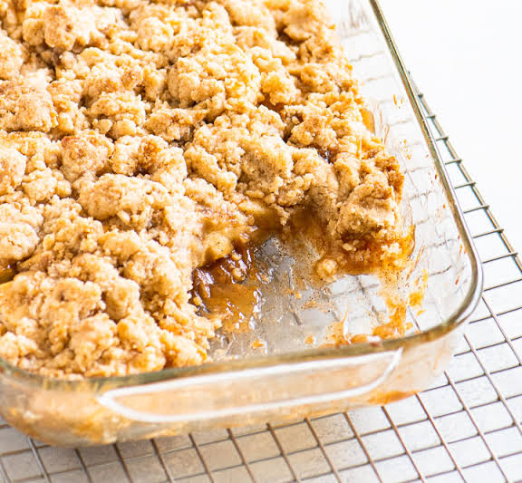

This caramel pear crumble is a delicious twist on a classic dessert! Made with sweet, juicy pears and rich caramelized condensed milk, it’s simple, comforting, and full of flavor.
Preheat the oven to 350 degrees F (175 degrees C).
Place unopened can of sweetened condensed milk in a large pot; fill pot with water to cover. Simmer gently for 3 hours, adding hot water as needed to keep the can fully submerged at all times to prevent bursting. Remove can from water with tongs; allow to cool completely before opening to prevent splattering.
Place apples in a large bowl. Whisk 1 tablespoon flour, cinnamon, and nutmeg together in a small bowl; stir mixture into apples. Pour apple mixture into a 9x13-inch baking pan. Combine water and vanilla in a separate bowl; pour over apple mixture.
Stir caramelized milk in the can until smooth; drizzle evenly over apple mixture.
Stir oats, 1 cup flour, brown sugar, baking soda, and salt together in another bowl until combined. Stir in butter until crumbly. Spread crumble mixture over apples and caramel.
Bake in the preheated oven until apples are tender and crumble is lightly browned, about 25 minutes.